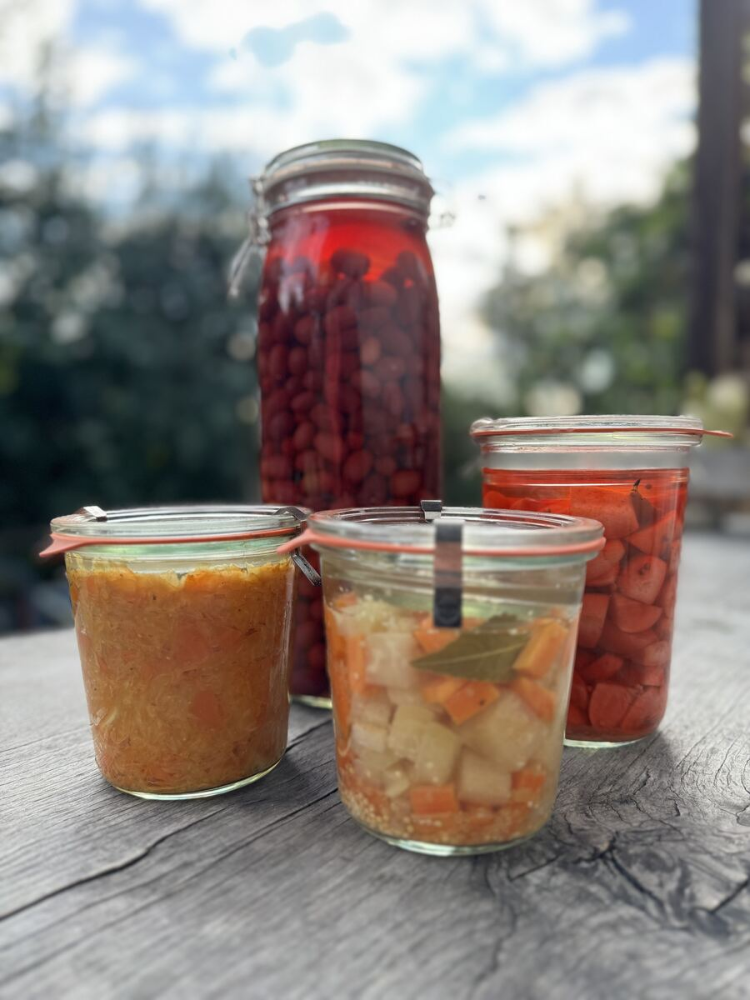

Saisonale Gerichte
Frische Kräuter der Saison landen direkt im Kochtopf – aromatisch, gesund und ganz nah an der Natur.
Aus der Natur
Als zertifizierte Kräuterpädagogin zeige ich dir, wie vielseitig heimische Kräuter sind – vom Kochtopf bis zur Hausapotheke.
Frische Kräuter der Saison landen direkt im Kochtopf – aromatisch, gesund und ganz nah an der Natur.
Aus Kräutern wird Pflege: Wir verarbeiten sie gemeinsam zu natürlicher Kosmetik – ohne unnötige Zusätze.
Altbewährtes neu entdeckt: Salben, Tees und Tinkturen für die eigene kleine Hausapotheke.
Kräuter und Naturmaterialien werden zu stimmungsvoller Dekoration für Haus und Tisch.

Aus meinen Kursen: Gemüse fermentieren und haltbar machen
Unverbindlich anfragen
Schreib mir, was dir vorschwebt – Wunschtermin, Ort und ungefähr wie viele Personen. Alles Weitere klären wir gemeinsam.